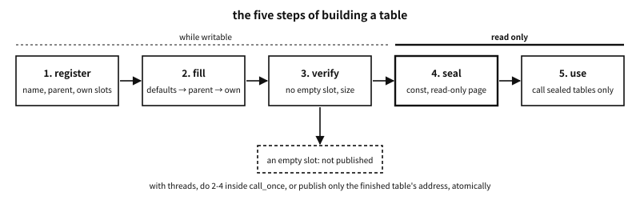
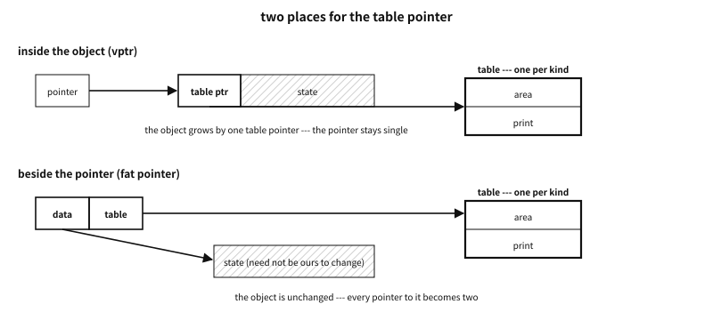
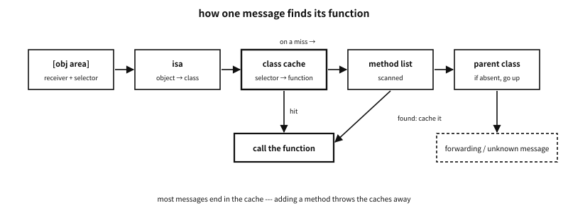

72 Dynamic virtual tables — building, sealing and looking up
What to know first
Looking back
Every function-pointer table in chapter 71 was static const. Are there programs whose tables cannot be fixed at compile time? If so, how must such a table be built to be safe?
A. There are. Plugins and drivers arrive while the program runs, libraries that pick an implementation by looking at the CPU fill their tables only at run time, and a graphics API’s functions differ from device to device. Such tables are built at run time, verified to have no empty slot, sealed against change once finished, and looked up by name when needed. What a call through such a table costs is measured in the next chapter (chapter 73).
The need for this chapter, and its context
NULL is called; let several threads build together and one sees a half-filled table; keep the table in writable memory and it becomes a target. Only by knowing the order of building, sealing and lookup can even a program that takes a single plugin be written safely.By the end of this chapter
The questions this chapter answers
- Building a table per pair — does that not make too many tables?
72.1 Static tables and dynamic tables#
A static table is one whose contents are fixed entirely at compile time. It is written in the source, like static const struct shape_ops circle_ops = { … };, and nobody changes it while the program runs. A dynamic table (dynamic virtual table) is built, changed or looked up while the program runs. It is used when the functions for its slots are known only at run time, or when the table’s shape — which parent it follows and which slots it overrides — is known only at run time.
C23 has no feature called a dynamic table. It has no static tables either — both are imitations built from structs and function pointers. This chapter leans on three clauses of the standard.
- Converting function pointers. A function pointer may be converted to another function pointer type and back. But calling through the converted type, when it does not match the function’s real type, is undefined behaviour (C23 §6.3.2.3p8). Every time an address taken from a plugin goes into a table slot, this clause applies. The CFI section of chapter 73 shows a call that breaks it.
- Atomic publication. Store the finished table’s address in an atomic variable to hand it to other threads, and a thread that sees the address also sees the table’s contents (release/acquire, §7.17).
call_once. It makes the building happen exactly once (§7.28.2.1).
There are four places that need a dynamic table.
| Place | What is known only at run time | Example |
|---|---|---|
| Plugins and drivers | which kinds of object exist — they are loaded while the program runs | dlopen/dlsym (POSIX), LoadLibrary/GetProcAddress (Windows) |
| Choosing by machine | which implementation goes in a slot | glibc’s memcpy and strlen (below), __builtin_cpu_supports (a GCC and Clang extension) |
| Run-time inheritance | what the parent’s table is — copy the parent, then override | GObject’s class_init, Xt’s class initialisation (chapter 74) |
| API loaders | the functions’ addresses — they differ per device or driver | Vulkan’s vkGetDeviceProcAddr, OpenGL function loaders |
Table 72.1 — Where dynamic tables are needed
The second row has an example on this machine. Look at glibc 2.41’s libc.so.6 with readelf --dyn-syms, and the type of memcpy and strlen is not an ordinary function (FUNC) but IFUNC. When a program is loaded, glibc looks at which instructions the CPU supports, picks one of several implementations and fills its address into the call sites — a dynamic table built once per program.
All four places have something known only at run time. Without that, no dynamic table is needed — the end of the next chapter comes back to this sentence.
72.2 The five steps of building a table#
A dynamic table is built in five steps.

Figure 72.1 — The five steps of building a table. After sealing, it is only read.
- Register. Receive, as data, which kinds of object (classes) there are, who their parents are and what goes in their own slots — a plugin list, a configuration file, a description struct (name, parent, function addresses) exported by a shared library.
- Fill. Fill in the order defaults → parent → own slots. It is chapter 70’s bundle of defaults done at run time — a kind writes only the slots that differ from its parent.
- Verify. Check there is no empty slot and the version’s size is right. A kind with an empty slot is not published.
- Seal. A finished table is not changed again. Hand it out only through a read-only pointer and, if possible, ask the operating system to make the memory holding it read-only.
- Use. Call only sealed tables.
examples-en/dynamic-vtables/build_table/build_table.c
/* Building tables at run time, in five steps: register, fill, verify, seal, use.
The kinds arrive as data (as a plugin list would), not as `static const` tables.
Filling goes defaults -> parent -> own slots, so a kind names only what differs.
Sealing makes the page that holds the tables read-only (POSIX mprotect).
Run with --write-after-seal to try to change a slot afterwards. */
#define _DEFAULT_SOURCE /* MAP_ANONYMOUS: Linux and the BSDs, POSIX 2024 */
#include <stdio.h>
#include <string.h>
#include <sys/mman.h>
#include <unistd.h>
struct stream;
typedef int (*slot)(struct stream *);
enum { WRITE, FLUSH, CLOSE, SLOTS };
static const char *const slot_names[SLOTS] = { "write", "flush", "close" };
struct stream_ops { slot s[SLOTS]; };
struct stream { const struct stream_ops *ops; const char *kind; };
/* behaviours --- each just says who it is */
#define SAY(fn) static int fn(struct stream *st) { (void)st; return 0; }
SAY(stream_flush_nothing) SAY(stream_close) SAY(file_write) SAY(file_flush)
SAY(gzip_write) SAY(gzip_close) SAY(memory_write)
static const struct { slot fn; const char *name; } fn_names[] = {
{ stream_flush_nothing, "stream_flush_nothing" }, { stream_close, "stream_close" },
{ file_write, "file_write" }, { file_flush, "file_flush" },
{ gzip_write, "gzip_write" }, { gzip_close, "gzip_close" },
{ memory_write, "memory_write" },
};
static const char *name_of(slot f)
{
for (size_t i = 0; i < sizeof fn_names / sizeof fn_names[0]; i++)
if (fn_names[i].fn == f) return fn_names[i].name;
return "(empty)";
}
/* 1. register: what a plugin list might say --- name, parent, own slots */
struct kind_desc { const char *name, *parent; bool abstract; slot own[SLOTS]; };
static const struct kind_desc descs[] = {
{ "gzip-file", "file", false, { [WRITE] = gzip_write, [CLOSE] = gzip_close } },
{ "file", "stream", false, { [WRITE] = file_write, [FLUSH] = file_flush } },
{ "memory", "stream", false, { [WRITE] = memory_write } },
{ "broken", "stream", false, { [CLOSE] = gzip_close } }, /* forgot write */
{ "stream", nullptr, true,
{ [FLUSH] = stream_flush_nothing, [CLOSE] = stream_close } },
};
#define KINDS (sizeof descs / sizeof descs[0])
static struct stream_ops *tables; /* lives in its own page, so it can be sealed */
static bool built[KINDS], published[KINDS];
static size_t page;
static int find(const char *name)
{
for (size_t i = 0; i < KINDS; i++)
if (strcmp(descs[i].name, name) == 0) return (int)i;
return -1;
}
/* 2. fill: the parent first (recursively), then copy it, then this kind's own slots */
static bool fill(int k, int depth)
{
if (built[k]) return true;
if (depth > (int)KINDS) return false; /* a cycle in the parents */
struct stream_ops t = {};
if (descs[k].parent) {
int p = find(descs[k].parent);
if (p < 0 || !fill(p, depth + 1)) return false;
t = tables[p];
}
for (int s = 0; s < SLOTS; s++)
if (descs[k].own[s]) t.s[s] = descs[k].own[s];
tables[k] = t;
built[k] = true;
return true;
}
int main(int argc, char **argv)
{
bool attack = argc > 1 && strcmp(argv[1], "--write-after-seal") == 0;
long ps = sysconf(_SC_PAGESIZE);
page = ps > 0 ? (size_t)ps : 4096;
if (KINDS * sizeof *tables > page) { puts("too many tables for a page"); return 1; }
tables = mmap(nullptr, page, PROT_READ | PROT_WRITE,
MAP_PRIVATE | MAP_ANONYMOUS, -1, 0);
if (tables == MAP_FAILED) { puts("mmap failed"); return 1; }
for (int k = 0; k < (int)KINDS; k++)
if (!fill(k, 0)) { printf("cannot build %s\n", descs[k].name); return 1; }
puts("built (defaults -> parent -> own slots):");
for (size_t k = 0; k < KINDS; k++) {
printf(" %-10s", descs[k].name);
for (int s = 0; s < SLOTS; s++)
printf(s + 1 < SLOTS ? " %s=%-20s" : " %s=%s",
slot_names[s], name_of(tables[k].s[s]));
puts(descs[k].abstract ? " (abstract)" : "");
}
/* 3. verify: a kind with an empty slot is not published, an abstract one never */
for (size_t k = 0; k < KINDS; k++) {
published[k] = !descs[k].abstract;
for (int s = 0; s < SLOTS && published[k]; s++)
if (!tables[k].s[s]) {
printf("verify: %s has no %s --- not published\n",
descs[k].name, slot_names[s]);
published[k] = false;
}
}
/* 4. seal: from here on the tables are only read */
if (mprotect(tables, page, PROT_READ) != 0) { puts("mprotect failed"); return 1; }
const struct stream_ops *sealed = tables;
puts("sealed: the page holding the tables is read-only");
/* 5. use */
for (size_t k = 0; k < KINDS; k++) {
if (!published[k]) continue;
struct stream st = { &sealed[k], descs[k].name };
int r = st.ops->s[WRITE](&st) | st.ops->s[FLUSH](&st) | st.ops->s[CLOSE](&st);
printf("use: a %s stream wrote, flushed and closed%s\n",
st.kind, r ? " (error)" : "");
}
if (attack) {
puts("now overwriting gzip-file's write slot...");
fflush(stdout);
tables[find("gzip-file")].s[WRITE] = memory_write; /* read-only page */
puts("the write went through");
}
munmap(tables, page);
return 0;
}
Output
built (defaults -> parent -> own slots):
gzip-file write=gzip_write flush=file_flush close=gzip_close
file write=file_write flush=file_flush close=stream_close
memory write=memory_write flush=stream_flush_nothing close=stream_close
broken write=(empty) flush=stream_flush_nothing close=gzip_close
stream write=(empty) flush=stream_flush_nothing close=stream_close (abstract)
verify: broken has no write --- not published
sealed: the page holding the tables is read-only
use: a gzip-file stream wrote, flushed and closed
use: a file stream wrote, flushed and closed
use: a memory stream wrote, flushed and closed
== again, with --write-after-seal
built (defaults -> parent -> own slots):
gzip-file write=gzip_write flush=file_flush close=gzip_close
file write=file_write flush=file_flush close=stream_close
memory write=memory_write flush=stream_flush_nothing close=stream_close
broken write=(empty) flush=stream_flush_nothing close=gzip_close
stream write=(empty) flush=stream_flush_nothing close=stream_close (abstract)
verify: broken has no write --- not published
sealed: the page holding the tables is read-only
use: a gzip-file stream wrote, flushed and closed
use: a file stream wrote, flushed and closed
use: a memory stream wrote, flushed and closed
now overwriting gzip-file's write slot...
stopped by signal 11 (SIGSEGV)
Five kinds arrive as data. gzip-file inherits from file, and file from stream, yet in the list the child comes before its parent — real plugin lists do not keep order for you either. fill builds the parent’s table first (recursively), copies it and overrides its own slots. So gzip-file’s flush is file_flush, from its parent, although nobody wrote it. In a broken list where A’s parent is B and B’s parent is A the recursion would never end, so fill counts how many levels it has climbed and stops once that passes the number of kinds.
Verification filtered out two kinds. stream is an abstract kind with no write, so it is never published, and broken forgot its write, so it was not published either. Instead of checking for an empty slot at every call site, it was stopped once at the point of publishing — chapter 70’s judgement about empty slots, moved to run time.
72.2.1 Sealing#
Sealing has two layers.
The first layer is the type. Hand out the finished table only as a const struct stream_ops *, and the compiler reports an error when code that received that pointer tries to change a slot. But this stops only writes through that pointer. It does not stop the original pointer used while building the table, or a write that spills over from a neighbouring buffer.
The second layer is memory. The operating system divides memory into units called pages (4 KiB on this machine) and gives each page permissions such as “read only” or “read and write”. The example built its tables in a page of their own and, once finished, made that page read-only with mprotect. From then on the CPU stops a write through any pointer — in the output’s second run (--write-after-seal), the attempt to write a sealed slot stopped with SIGSEGV.
Platform note. mmap and mprotect
MAP_ANONYMOUS, which gets memory without a file, has long been in Linux and the BSDs and entered POSIX in its 2024 edition. The example opens that name in glibc with _DEFAULT_SOURCE. The Windows counterparts are VirtualAlloc and VirtualProtect — this book did not test them. The page size is asked with sysconf(_SC_PAGESIZE).A common misconception. “The table is sealed read-only, so calls through the table are safe”
72.2.2 Building once across threads#
Lazy building, which builds the table on first use, has a trap.
static struct ops table;
static bool built;
const struct ops *get_table(void)
{
if (!built) { fill(&table); built = true; } /* two threads at once? */
return &table;
}If two threads come in together, both build the table. Worse, when one thread sees that built is true, the table the other thread is filling may still be half filled. One side writing and the other reading the same variable without synchronisation is a data race, and undefined behaviour (chapter 94). Looking at one thread alone the result is the same, so the compiler may move built = true before the writes that fill the table.
There are two ways out. The first is call_once. It runs the building function exactly once, and every caller returns only after that function has finished.
examples-en/dynamic-vtables/once.c
/* Build once, publish once: eight threads ask for the tables at the same moment.
call_once runs the builder exactly once, and every caller returns only after it
has finished --- so no thread can see a half-filled table. */
#include <stdatomic.h>
#include <stdio.h>
#include <threads.h>
struct ops { int (*area)(int); int (*perimeter)(int); };
static int sq_area(int s) { return s * s; }
static int sq_perimeter(int s) { return 4 * s; }
static struct ops table; /* filled at run time, then only read */
static once_flag table_once = ONCE_FLAG_INIT;
static atomic_int builds;
static void build(void)
{
atomic_fetch_add(&builds, 1);
table.area = sq_area;
thrd_sleep(&(struct timespec){ .tv_nsec = 20'000'000 }, nullptr); /* a slow build */
table.perimeter = sq_perimeter;
}
static const struct ops *get_table(void)
{
call_once(&table_once, build);
return &table;
}
enum { THREADS = 8 };
static const struct ops *seen[THREADS];
static int answer[THREADS];
static int worker(void *arg)
{
int i = *(int *)arg;
seen[i] = get_table();
answer[i] = seen[i]->area(3) + seen[i]->perimeter(3); /* both slots are there */
return 0;
}
int main(void)
{
thrd_t t[THREADS];
int id[THREADS];
for (int i = 0; i < THREADS; i++) {
id[i] = i;
if (thrd_create(&t[i], worker, &id[i]) != thrd_success) {
puts("thrd_create failed");
return 1;
}
}
for (int i = 0; i < THREADS; i++) thrd_join(t[i], nullptr);
bool same = true, right = true;
for (int i = 0; i < THREADS; i++) {
same = same && seen[i] == seen[0];
right = right && answer[i] == 9 + 12;
}
printf("%d threads asked; the builder ran %d time(s)\n",
THREADS, atomic_load(&builds));
printf("every thread got the same table: %s\n", same ? "yes" : "no");
printf("every answer was area 9 + perimeter 12 = 21, both slots filled: %s\n",
right ? "yes" : "no");
return 0;
}
Output
8 threads asked; the builder ran 1 time(s)
every thread got the same table: yes
every answer was area 9 + perimeter 12 = 21, both slots filled: yes
The build was made slow on purpose — it fills the first slot (area), sleeps 20 ms, then fills the second (perimeter). Even so, all eight threads got the same table, and all called both slots and got 9 + 12 = 21. Had any thread seen a half-filled table, its second slot would have been empty.
The second way is atomic publication. After the table is fully built, its address is stored into an atomic pointer with memory_order_release, and readers take it out with memory_order_acquire (chapter 95). Then a thread that sees the address also sees the writes before it — every slot of the table. It takes more work than call_once, but the table can be swapped — build a new table fully on the side, then change only the address. When to free the old table is a separate problem, though — a thread may still be holding it.
Platform note. ThreadSanitizer and <threads.h>
get_table) with ThreadSanitizer (-fsanitize=thread), but on this machine (glibc 2.41, GCC 14.2 and Clang 19.1) TSan itself stopped under threads made with thrd_create. With pthread_create instead, both compilers reported a “data race”.72.3 Where to keep the table pointer#
So far the table pointer has been inside the object — the first member ops. This is the shape of the usual C++ implementation, of GObject and of the Linux kernel. The other shape keeps the table pointer beside the pointer to the object. A pointer to the data and a pointer to the table are tied together and carried as a pair. The pair is twice the size of an ordinary pointer, so it is called a fat pointer. Go’s interface values and Rust’s &dyn Trait have this shape.

Figure 72.2 — The table pointer inside the object (top) and beside the pointer (bottom).
examples-en/dynamic-vtables/fat.c
/* Fat pointers: a pointer to the data and a pointer to the table, carried together.
The table lives outside the object, so an interface can be attached to types we
cannot change --- here the standard library's struct tm and a plain double.
The object pays nothing; every pointer to it is twice as wide. */
#include <stdio.h>
#include <time.h>
struct printable_ops { void (*print)(const void *self); const char *type; };
struct printable { const void *self; const struct printable_ops *ops; }; /* fat */
static void print_tm(const void *self)
{
const struct tm *t = self;
printf("%04d-%02d-%02d", t->tm_year + 1900, t->tm_mon + 1, t->tm_mday);
}
static void print_double(const void *self) { printf("%.3f", *(const double *)self); }
/* the "vptr" way, for comparison: the table pointer is inside the object */
struct point_ops;
struct point { const struct point_ops *ops; double x, y; };
struct point_ops { void (*print)(const struct point *); };
static void print_point(const struct point *p) { printf("(%g, %g)", p->x, p->y); }
static const struct point_ops point_ops = { print_point };
static void print_point_any(const void *self) { print_point(self); }
static const struct printable_ops tm_printable = { print_tm, "struct tm" };
static const struct printable_ops double_printable = { print_double, "double" };
static const struct printable_ops point_printable = { print_point_any, "struct point" };
static void print_all(const struct printable *xs, size_t n)
{
for (size_t i = 0; i < n; i++) {
printf(" %-13s ", xs[i].ops->type);
xs[i].ops->print(xs[i].self);
putchar('\n');
}
}
int main(void)
{
struct tm day = { .tm_year = 2026 - 1900, .tm_mon = 10, .tm_mday = 6 };
double ratio = 1.618;
struct point p = { &point_ops, 3, 4 };
struct printable xs[] = {
{ &day, &tm_printable }, { &ratio, &double_printable }, { &p, &point_printable },
};
puts("one interface, three types --- two of them never heard of it:");
print_all(xs, sizeof xs / sizeof xs[0]);
printf("sizeof(struct tm) %zu, unchanged; sizeof(double) %zu, unchanged\n",
sizeof day, sizeof ratio);
printf("sizeof(struct point) %zu --- it carries its own table pointer\n", sizeof p);
printf("a plain pointer %zu bytes, a fat pointer %zu bytes\n",
sizeof(void *), sizeof(struct printable));
return 0;
}
Output
one interface, three types --- two of them never heard of it:
struct tm 2026-11-06
double 1.618
struct point (3, 4)
sizeof(struct tm) 56, unchanged; sizeof(double) 8, unchanged
sizeof(struct point) 24 --- it carries its own table pointer
a plain pointer 8 bytes, a fat pointer 16 bytes
One interface, printable, printed three types. struct tm is a standard library struct, and double is not even a struct — we can add a member to neither. Yet the interface was attached from outside, and the two types kept their sizes. The third, struct point, is our own type, so for comparison it keeps its table pointer inside the object — 8 bytes more, 24 bytes. What the fat pointer paid is in the last line — a pointer grew from 8 bytes to 16.
| To compare | Inside the object (vptr) | Beside the pointer (fat pointer) |
|---|---|---|
| Size of the object | grows by one table pointer | unchanged |
| Size of a pointer | one ordinary pointer | two pointers |
| An interface on a type you cannot change | impossible — a member must be added | attached from outside |
| One object, several interfaces | embed several tables, or look them up (next section) | make a different pair for each interface |
An API that takes a single pointer (a callback’s void *) | pass it as is | the pair must be stored somewhere and its address passed |
Table 72.2 — Two places for the table pointer
Neither can be called better — it is a trade. Counting memory alone, the sum is simple. A million objects, each pointed to by one pointer: the table pointer inside the objects costs 8 MB more, and so do the fat pointers. If ten pointers point to each object, the fat side costs ten times as much; with many objects and few pointers, the other way round.
72.4 Several interfaces, and finding them#
One object sometimes plays several roles. It is a shape, and it can also be saved to a file, and compared in size with other shapes. With one table — one interface — per role, the caller has to obtain this role’s table for this object. There are three ways to find it.
- COM’s
QueryInterface. The first table of every object always hasQueryInterface. Ask with the number of the interface you want (an IID, a 128-bit identifier), and it returns a pointer to that interface’s table or answers “no”. From C it is called asobj->lpVtbl->QueryInterface(obj, &IID_…, &out)(chapter 74). - GObject’s
g_type_interface_peek. Given a class structure and an interface type, it returns the interface structure that class implements. The type system keeps a list of interfaces per class. - Go’s itab. An interface value is a fat pointer, and its table side is an itab, one per (interface, concrete type) pair. A Go type never writes down which interfaces it follows. So when the run-time first meets a pair, it builds the itab by matching methods by name and puts it in a hash table. Pairs that do not match go in too, as “no match”.1
The last way, built in C:
examples-en/dynamic-vtables/itab.c
/* One table per (interface, concrete type) pair, built at run time on first use and
kept in a hash table --- the idea of Go's itab, in C.
A type only lists its methods by name; it never says which interfaces it satisfies.
A failed match is cached too, so asking again costs a lookup, not a rebuild. */
#include <stdint.h>
#include <stdio.h>
#include <stdlib.h>
#include <string.h>
typedef double (*fn)(const void *self);
struct method { const char *name; fn f; };
struct type { const char *name; const struct method *methods; size_t n; };
struct iface { const char *name; const char *const *wants; size_t n; };
struct itab { const struct iface *in; const struct type *ty; bool ok; fn fun[4]; };
/* ---- the cache: open addressing, keyed by the pair of pointers ---- */
enum { SLOTS = 64 };
static struct itab *cache[SLOTS];
static unsigned builds, hits;
static size_t hash(const struct iface *in, const struct type *ty)
{
uintptr_t h = (uintptr_t)in * 31 ^ (uintptr_t)ty;
return (size_t)(h ^ h >> 7) % SLOTS;
}
static struct itab *build(const struct iface *in, const struct type *ty)
{
struct itab *t = calloc(1, sizeof *t);
if (!t) return nullptr;
*t = (struct itab){ in, ty, true, {} };
builds++;
for (size_t w = 0; w < in->n && w < 4; w++) { /* match by name, in order */
fn found = nullptr;
for (size_t m = 0; m < ty->n; m++)
if (strcmp(ty->methods[m].name, in->wants[w]) == 0) found = ty->methods[m].f;
if (!found) { t->ok = false; break; }
t->fun[w] = found;
}
return t;
}
static const struct itab *get_itab(const struct iface *in, const struct type *ty)
{
size_t i = hash(in, ty);
for (size_t probes = 0; probes < SLOTS; probes++, i = (i + 1) % SLOTS) {
if (!cache[i]) return cache[i] = build(in, ty); /* first time: build, keep */
if (cache[i]->in == in && cache[i]->ty == ty) { hits++; return cache[i]; }
}
return nullptr; /* cache full */
}
/* ---- types that know nothing about interfaces ---- */
struct circle { double r; };
struct label { const char *text; };
static double circle_area(const void *s)
{ const struct circle *c = s; return 3.0 * c->r * c->r; }
static double circle_perimeter(const void *s)
{ const struct circle *c = s; return 6.0 * c->r; }
static double label_length(const void *s)
{ const struct label *l = s; return (double)strlen(l->text); }
static const struct method circle_m[] = {
{ "area", circle_area }, { "perimeter", circle_perimeter },
};
static const struct method label_m[] = { { "length", label_length } };
static const struct type circle_t = { "circle", circle_m, 2 };
static const struct type label_t = { "label", label_m, 1 };
static const char *const shape_wants[] = { "area", "perimeter" };
static const struct iface shape_i = { "Shape", shape_wants, 2 };
/* an interface value: the itab plus the data --- a fat pointer */
struct shape_value { const struct itab *tab; const void *data; };
static bool as_shape(const struct type *ty, const void *data, struct shape_value *out)
{
const struct itab *t = get_itab(&shape_i, ty);
if (!t || !t->ok) return false;
*out = (struct shape_value){ t, data };
return true;
}
int main(void)
{
struct circle cs[] = { { 1 }, { 2 }, { 0.5 } };
struct label lb = { "hello" };
for (size_t i = 0; i < 3; i++) {
struct shape_value v;
if (as_shape(&circle_t, &cs[i], &v))
printf("circle %.1f as Shape: area %.2f, perimeter %.2f\n",
cs[i].r, v.tab->fun[0](v.data), v.tab->fun[1](v.data));
}
for (int i = 0; i < 2; i++) {
struct shape_value v;
bool ok = as_shape(&label_t, &lb, &v);
printf("label as Shape: %s\n", ok ? "yes" : "no --- it has no area");
}
printf("tables built %u (one per pair, the failure too), cache hits %u\n",
builds, hits);
for (size_t i = 0; i < SLOTS; i++) free(cache[i]);
return 0;
}
Output
circle 1.0 as Shape: area 3.00, perimeter 6.00
circle 2.0 as Shape: area 12.00, perimeter 12.00
circle 0.5 as Shape: area 0.75, perimeter 3.00
label as Shape: no --- it has no area
label as Shape: no --- it has no area
tables built 2 (one per pair, the failure too), cache hits 3
While three circles were used as Shape, the table was built only once and the other two came from the cache. label has no area, so it is not a Shape. “No match” stayed in the cache too, so the second question ended in the cache without building again — in the last line, tables built 2 is one for the circles and one for the label, and cache hits 3 is two circles and the label.
Q. Building a table per pair — does that not make too many tables?
A. Only pairs actually met are built. Even with a hundred interfaces and a thousand types, the pairs a program actually asks about are far fewer. The first time is expensive, matching names, but after that it is one hash lookup. To cut further, remember “the last pair” at each call site — the idea of the inline cache measured in chapter 73.
72.5 Dispatch by name#
The tables so far chose a function by slot position — ops->area is “the table’s first slot”, and that position is fixed at compile time. Smalltalk and Objective-C choose by name. Send the message area to an object, and the run-time looks for a method named area in that object’s class. Comparing the name as a string every time would be slow, so each name is given a number once and the lookup goes by number. That number is called the selector. This is the shape closest to Alan Kay’s idea in chapter 70 — objects talk to one another only by messages.

Figure 72.3 — The way one message finds its function. Most end in the class’s cache.
examples-en/dynamic-vtables/lookup.c
/* Dispatch by name (selector) --- the Smalltalk and Objective-C way, in C.
1. A message name is interned once and becomes an integer selector.
2. The class's method list is scanned; if the method is not there, the parent's.
3. What is found goes into a per-class cache; next time the cache answers.
4. If nothing is found, the "does not understand" handler gets it (forwarding).
5. Adding a method at run time bumps an epoch, which throws away every cache. */
#include <stdio.h>
#include <string.h>
#define MAX_SELECTORS 32
#define MAX_METHODS 8
#define CACHE_SLOTS 8
struct object;
typedef double (*imp)(struct object *self);
struct method { unsigned sel; imp fn; };
struct cache_slot { unsigned sel; imp fn; unsigned epoch; };
struct class {
const char *name;
struct class *parent;
struct method methods[MAX_METHODS];
unsigned n_methods;
struct cache_slot cache[CACHE_SLOTS];
};
struct object { struct class *isa; double size; };
/* ---- interning selectors ---- */
static const char *selector_names[MAX_SELECTORS];
static unsigned n_selectors;
static unsigned intern(const char *name)
{
for (unsigned i = 0; i < n_selectors; i++)
if (strcmp(selector_names[i], name) == 0) return i + 1;
if (n_selectors == MAX_SELECTORS) return 0;
selector_names[n_selectors++] = name;
return n_selectors; /* 0 is kept for "no selector" */
}
/* ---- lookup ---- */
static unsigned epoch = 1; /* goes up whenever methods change */
static unsigned slow_lookups, cache_hits;
static imp lookup_slow(const struct class *c, unsigned sel)
{
slow_lookups++;
for (; c; c = c->parent)
for (unsigned i = 0; i < c->n_methods; i++)
if (c->methods[i].sel == sel) return c->methods[i].fn;
return nullptr;
}
static imp lookup(struct class *c, unsigned sel)
{
struct cache_slot *slot = &c->cache[sel % CACHE_SLOTS];
if (slot->sel == sel && slot->epoch == epoch) { cache_hits++; return slot->fn; }
imp fn = lookup_slow(c, sel);
*slot = (struct cache_slot){ sel, fn, epoch }; /* "not found" is cached too */
return fn;
}
static bool add_method(struct class *c, const char *name, imp fn)
{
if (c->n_methods == MAX_METHODS) return false;
c->methods[c->n_methods++] = (struct method){ intern(name), fn };
epoch++; /* every class's cache is stale at once */
return true;
}
/* ---- sending ---- */
static double does_not_understand(struct object *self, unsigned sel)
{
printf(" %s does not understand '%s'\n", self->isa->name,
sel ? selector_names[sel - 1] : "(selector table full)");
return 0;
}
static double send(struct object *self, const char *message)
{
unsigned sel = intern(message);
imp fn = sel ? lookup(self->isa, sel) : nullptr;
return fn ? fn(self) : does_not_understand(self, sel);
}
/* ---- the classes ---- */
static double shape_describe(struct object *self)
{ printf(" a %s of size %g\n", self->isa->name, self->size); return 0; }
static double circle_area(struct object *self) { return 3.0 * self->size * self->size; }
static double square_area(struct object *self) { return self->size * self->size; }
static double shape_perimeter(struct object *self) { return 4.0 * self->size; }
static struct class shape = { .name = "Shape" };
static struct class circle = { .name = "Circle", .parent = &shape };
static struct class square = { .name = "Square", .parent = &shape };
int main(void)
{
add_method(&shape, "describe", shape_describe);
add_method(&circle, "area", circle_area);
add_method(&square, "area", square_area);
struct object things[] = { { &circle, 2 }, { &square, 3 }, { &circle, 1 } };
puts("send 'describe' (inherited) and 'area' (own) to each:");
for (size_t i = 0; i < sizeof things / sizeof things[0]; i++) {
send(&things[i], "describe");
printf(" area = %g\n", send(&things[i], "area"));
}
printf("slow lookups %u, cache hits %u\n\n", slow_lookups, cache_hits);
puts("send 'perimeter', which nobody defines yet:");
send(&things[0], "perimeter");
send(&things[0], "perimeter"); /* "not found" comes from the cache too */
printf("slow lookups %u, cache hits %u\n\n", slow_lookups, cache_hits);
puts("add 'perimeter' to Shape at run time, then send again:");
add_method(&shape, "perimeter", shape_perimeter);
printf(" perimeter = %g\n", send(&things[0], "perimeter"));
printf(" perimeter = %g\n", send(&things[1], "perimeter"));
printf("slow lookups %u, cache hits %u\n", slow_lookups, cache_hits);
return 0;
}
Output
send 'describe' (inherited) and 'area' (own) to each:
a Circle of size 2
area = 12
a Square of size 3
area = 9
a Circle of size 1
area = 3
slow lookups 4, cache hits 2
send 'perimeter', which nobody defines yet:
Circle does not understand 'perimeter'
Circle does not understand 'perimeter'
slow lookups 5, cache hits 3
add 'perimeter' to Shape at run time, then send again:
perimeter = 8
perimeter = 12
slow lookups 7, cache hits 3
The output shows five properties of dispatch by selector.
- A name is compared only the first time. The first call of
intern("area")putsareain the name list and gives it a number (registering a name once and turning it into a number like this is called interning). After that, the same name is always the same number. - The parent chain.
describeis not inCirclebut inShape. Lookup climbs from the class to its parent — inheritance has become the order of the search. - A per-class cache. What is found goes into that class’s cache. At the end of the output’s first paragraph,
slow lookups 4isCircleandSquareeach finding two messages for the first time; the third object’s two messages (aCircleagain) ended in the cache (cache hits 2). - An unknown message. Nobody defined
perimeter. What the compiler would have stopped had it been a table slot goes at run time to a handler here. At this point Objective-C can hand the message on to another object; this is called forwarding. “Not found” is cached too, so the secondperimeterdid no slow lookup (slow lookups 5, cache hits 3). - Adding a method at run time. The program keeps a global number (the epoch) that goes up whenever a method list changes, and every cache entry records the epoch it was stored under. Adding
perimetertoShaperaised the epoch, and every cache entry went stale at once. So the next two messages did slow lookups again (slow lookups 7) — a stale “not found” is not trusted.
The flexibility of this scheme is plain. Methods are added without recompiling a class, unknown messages are taken and passed on, and methods are attached to classes others wrote (Objective-C’s categories, chapter 74). The cost is the lookup. A cache hit is one hash; a miss scans lists and climbs to the parent — the next chapter measures the difference. And the compiler cannot catch a wrong name — a typo becomes an “unknown message” at run time.
72.6 Tables whose versions change#
In chapter 71 we wrote the size into a struct so that it survives new versions. The same rule works for tables. Put a size or version number at the head of the table, add slots only at the end, and leave unknown slots at their defaults. SQLite’s VFS table took this road, and the story of the one time that table broke the rule is in chapter 74.
There are also tables that differ per device at run time. In Vulkan, a library called the loader sits between the application and the graphics drivers. Take that device’s function addresses with vkGetDeviceProcAddr and keep them, and the step where the loader chooses a driver for every call is skipped. An address taken that way may be used only for that device and the objects made from it — a dynamic table built separately per device.2
There is also a way to match versions not by the slots’ positions but by the slots’ numbers. In OpenSSL 3, a module that plugs in algorithm implementations (a provider) hands out an array of (function number, function pointer) pairs, and the receiver skips numbers it does not know. With no slot positions, the rule “add only at the end” is not needed — instead the array has to be scanned once at the start (chapter 74).
72.7 Summary#
| Topic | The point |
|---|---|
| Dynamic tables | tables built, changed or looked up at run time. Plugins, choosing by machine (glibc’s IFUNC), run-time inheritance, API loaders |
| Five steps | register → fill (defaults → parent → own) → verify (an empty slot is not published) → seal → use |
| Sealing | two layers: a const pointer and a read-only page. The table pointer inside the object is still a target for attackers |
| Building once | call_once or release/acquire publication. A lazy build’s if (!built) is a data race |
| Where the table pointer goes | inside the object (pointers stay small) or a fat pointer (attaches even to types you cannot change). Neither is better; it is a trade |
| Several interfaces | QueryInterface, g_type_interface_peek, an itab built and cached per pair |
| Selectors | lookup by name, the parent chain, a per-class cache, forwarding, emptying caches by epoch. Typos show at run time |
| Tables whose versions change | a size or version number at the head, slots only at the end. Tables taken per device (Vulkan), slots matched by number (OpenSSL 3) |
Table 72.3 — Dynamic virtual tables — one line each
We can now build, seal and look up tables. The question left is how much one call through such a table costs. The next chapter measures eleven ways of choosing a function on this machine, and looks at ways to cut that cost and at the cost security mechanisms add.